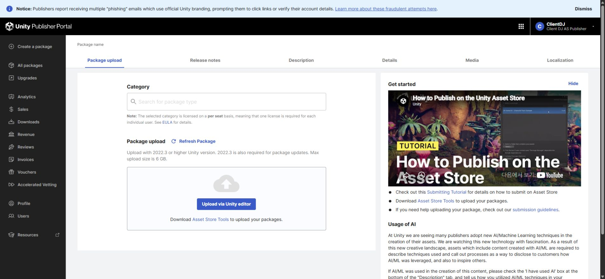

Tracefolio REPORTS & ISSUES
Tracefolio REPORTS & ISSUESDDT 2.0.2 설치·공식 검사·최신 패키지 업로드
검증 대기최신 네이티브 패키지 설치와 공식 Validator 실패0, 고정 해시의 SDK 업로드를 확인했습니다. 실제 화면·샘플 제거 검증은 승인 대기이며 심사 제출은 하지 않았습니다.
작업 결과
2.0.2 최신 패키지를 실제 Unity에서 내보내 고정했고, 새 프로젝트 설치·공식 검사 후 같은 해시의 파일을 초안에 업로드했습니다. 가격은 $19.99로 유지했습니다. 전체 최종 QA는 아직 완료가 아닙니다.

변경 내용
적용 내용
기존 패키지를 별도 보존하고 최신 소스에서 Unity 네이티브 내보내기를 수행했습니다. SDK가 해시를 재확인한 파일만 업로드했습니다. 판매 가격과 미디어를 유지했습니다.
제품당 영상1개·갤러리16장·키 이미지3개가 유지됩니다. 영상 청취는 사용자가 네 제품 모두 이상 없다고 직접 확인했습니다.
검증
새 빈 Unity 프로젝트에4개 고정 패키지를 실제 ImportPackage로 설치했고,12개 설치 assertion과 어셈블리 로드를 확인했습니다. 설치된 고객 경로에서 Asset Store Tools11.3.1 공식 Validator를 실행한 결과 이 제품은 pass=25, warning=4, fail=0입니다. 경고를0건으로 바꾸어 보고하지 않았습니다.
샘플·개발 코드 참조를 금지한13개 본체 어셈블리를 새 Unity 응답 파일로 실제 Roslyn 컴파일하여 모두 통과했습니다. 실제 샘플 폴더 제거 후 Unity 재컴파일은 별도 미실행입니다.
네 제품과 공통 템플릿의 현재 소스·메타데이터 및 고정 패키지 재대조 차이는0건이며, 업로드 영수증 SHA-256이 고정 파일과 일치합니다. 설치 후 DDT C#346개가 한국어 주석으로 변경된 것은 실제 CodeCommentLocalization 첫 실행 기록과 대조했습니다. Roslyn 실행 토큰·전처리 지시문 차이는0건입니다. 변경된 메타데이터99개의 GUID도 유지됐습니다.
현재 포털 표시: Nov 03, 2026 07:23 UTC, 0 files, 63.4 MB
Unity 공식 업로드 절차에 따라 포털도 재열기 확인했습니다. Upload 성공과 심사 제출은 별도이며 Submit은 실행하지 않았습니다.
남은 사항
DDT 문서 검사에서 현재 가이드가 사용하는 이미지 47장의 소스 변경이 검출되어 실제 재촬영이 남았습니다. 이미지 해시만 최신 값으로 바꾸지 않았습니다.
공통 잔여: 실제 샘플 폴더 제거 후 Unity 컴파일, 공유 창·언어·키보드 및 핵심 동작 회귀. 자동 승인 검토가 최신 명시적 GUI 허락 부재를 이유로 별도 Unity 창 실행·재촬영을 거절했고, 화면 검증 허락 질문의 응답을 기다리고 있습니다. 이를 우회하지 않았습니다. 문서 촬영 도구의 기존 접근 권한 오류는 제품 설치 오류와 분리하여 보존했고, 도구의 배치 준비까지만 수행했습니다.
포털 파일 집계가0으로 표시되는 제품의 서버 인덱싱 완료 여부는 미확인입니다. 이를 빈 패키지로 단정하거나 집계 완료로 처리하지 않았습니다. 고정 파일 자체는 실제 설치를 통과했습니다.
교훈 검토: 기존 전역의 실행 근거·산출물 고정·GUI 허락 규칙으로 충족하여 전역 변경은 없습니다. 프로젝트 체크리스트에 Entity Forge 무료 유지 규칙을 추가했습니다.
작업 시간
- 제안 시간: 30~60분
- 실제로 완료된 시간: 2026-11-03 15:59:54 KST 시작. 이 제품 SDK 업로드 완료 2026-11-03 16:26:56 KST. 16:47:31 KST 기준 공개 기록이며 전체 화면 QA 완료가 아닙니다. 공개 배포 확인 시각은 채팅에 별도 기록합니다.
- XERJ: 실패 — XERJ 노드 미실행 및 재시작 실패를 확인했습니다. rg·현재 소스·기존 성공 실행 기록과 실제 Unity/SDK 결과로 검증했습니다.